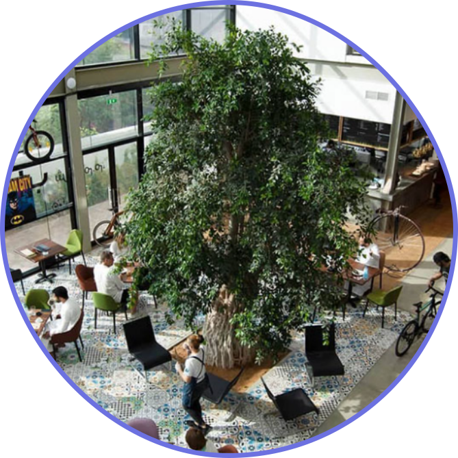
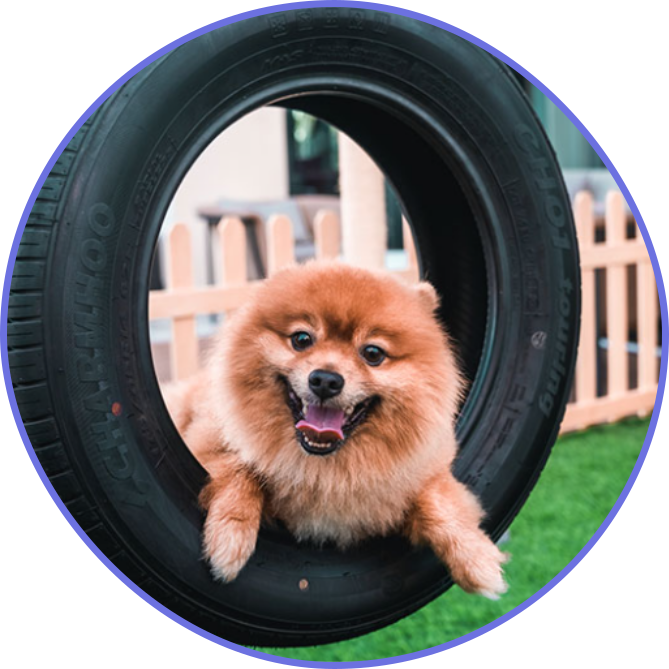

1762 JLT
On offer at 1762 JLT is a range you won’t find at other locations. Pop in and relax up on beautiful indoor
terrace, take in bespoke décor, and enjoy the experience. It showcases a boulangerie,
an à la carte menu, and an interactive food lab. It even has a big patio where Pets are welcome
to sit out and enjoy the cool weather with their owners making this location ideal for you if you happen to have
a pet.
Cycle Bistro
With a constant buzz of people and activity, The Cycle Bistro offers the best of locally and international
sourced ingredients to create truly healthy and delicious dishes. The Paleo diet is seen as a lifestyle, not a
trend that comes and goes. It prohibits us from using any Sugar, Dairy and Gluten which means that there is
definitely no preservatives or additives, making us the ultimate health food restaurant.

Good Burger
This spot is one of the latest additions to the Dubai burger scene. It was founded in February 2020 and was born
out of the kitchen of Maiz Tacos. They offer great and high-quality burgers. Since launching, Good Burger has
grown its menu to include fried chicken burgers, portobello mushroom burger, messy fries and more. Their unique
selling point is how well their season their patties and the quality ingredients they use on their meat. They
also have a special collab burger, which they've made with Maiz Tacos, the Good Mexican Chicken Sandwich.
Jones The Grocer
Famous Australian brand Jones The Grocer has several spots dotted across Dubai and it has just opened
a new branch at Dubai’s latest beachfront promenade, Palm West Beach on Palm Jumeirah. Dine inside the
restaurant or out on the terrace or sit on the beach which will have seating and cushy bean bags. And
you can take in all the views with your pup by your side.
LDC Kitchen + Coffee
The new LDC Kitchen + Coffee in One JLT has a quirky menu hoomans will enjoy. And if your plus one has
four legs, you both can enjoy the outdoor area that’s adorned with twinkling lights and plenty of greenery.
Doggies will be given bowls to help hydrate as you tuck into some delicious grub.
Vida Emirates Hills
Juniper at Vida Emirates Hills in the tranquil and leafy Emirates Hills neighbourhood has some barking
great news that’s certain to get plenty of tails wagging. The gorgeous outdoor setting has a cute new
playground featuring fun equipment including tunnels, hoops and bridges that your pups will just love.
The playground can be used if you’re staying at the hotel or visiting for lunch or dinner.
